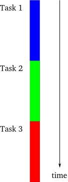

aiohttp
aka Node.js for humans
starring Python 3
Talk by Marco Mariani - R&D @ Alter Way
Why microservices...
 http://theartofscalability.com/
http://theartofscalability.com/
...because
- Small, easy to understand code base
- Easy to scale
- Easy to throw away
- Easy to deploy
- Ability to change technology
- System resilience
- Better documentation, etc.
less code → more architecture
http://microservices.io/patterns/microservices.html
tl;dr good
http://khoadinh.github.io/2015/05/01/microservices-architecture-overview.htmlless good
https://en.wikipedia.org/wiki/Enterprise_service_bus
The entire system is tightly coupled, deployment is heavy
The conventient monolith
If choices in the data layer are dictated by the upper layers or vice-versa, be careful.
http://malakarbhramar.blogspot.fr/2009/07/three-layer-achitecture-in-cnet.htmla taxonomy
https://codingarchitect.wordpress.com/2012/10/22/full-stack-frameworks-vs-non-full-stack-frameworks/
Frameworks, libraries
and tourist traps
|
|
|
|
http://bitworking.org/news/Why_so_many_Python_web_frameworks
Common Mistakes as Python Web Developer
Armin Ronacher (author of Flask)
http://lucumr.pocoo.org/2010/12/24/common-mistakes-as-web-developer/Why async?
|

sync (theory) |

sync (real) |

threaded |

async |

import asyncio
-
PEP 3156 -- Asynchronous IO Support Rebooted: the "asyncio" Module
- codenamed Tulip, released in 3.4
- backported to python2 as Trollius (on pypi)
- since 3.5: PEP 492 -- Coroutines with async and await syntax
Interoperable with "legacy" async libraries by sharing / adapting event loops (with tornado, twisted, libevent..)
aiohttp
- ~6k lines of code, >100 contributors since Oct. 2013
- built upon asyncio (Python >=3.4 or Trollius for 2.7/PyPy)
- HTTP Server and Client
- WebSocket Server and Client
- simple, customizable routing (has traversal plug-in)
- middleware, event/signals, WSGI
- templates, sessions, authentication... are plug-ins
- ONE package dependency :) "chardet"
client example
import aiohttp
import asyncio
urls = ["http://www.cnn.com", "http://espn.go.com/",
"http://grantland.com", "http://www.newyorker.com/"]
async def get_url(url):
response = await aiohttp.request('GET', url)
print('%s: %s %s' % (url, response.status, response.reason))
response.close()
tasks = [get_url(u) for u in urls]
asyncio.get_event_loop().run_until_complete(asyncio.wait(tasks))
Go equivalent
package main
import (
"fmt"
"net/http"
"sync"
)
func main() {
urls := []string{"http://www.cnn.com","http://espn.go.com/",
"http://grantland.com","http://www.newyorker.com/"}
var wg sync.WaitGroup
wg.Add(len(urls))
for _, url := range urls {
go func(url string) {
defer wg.Done()
response, err := http.Get(url)
if err != nil {
// error handling
}
fmt.Printf("%s: %s\n",url,response.Status)
}(url)
}
wg.Wait() // waits until the url checks complete
}asyncio resources
|
|
see github.com/aio-libs and asyncio.org for more
server example
import asyncio
from aiohttp import web
async def hello(request):
name = request.match_info['name']
return web.Response(text='Hello %s' % name)
app = web.Application()
app.router.add_route('GET', '/hello/{name}', hello)
server boilerplate
loop = asyncio.get_event_loop()
handler = app.make_handler()
f = loop.create_server(app.make_handler(), '0.0.0.0', '8000')
srv = loop.run_until_complete(f)
print('serving on', srv.sockets[0].getsockname())
try:
loop.run_forever()
except KeyboardInterrupt:
pass
finally:
loop.run_until_complete(handler.finish_connection(1.0))
srv.close()
loop.run_until_complete(srv.wait_closed())
loop.run_until_complete(app.finish())
loop.close()
Recommended readings